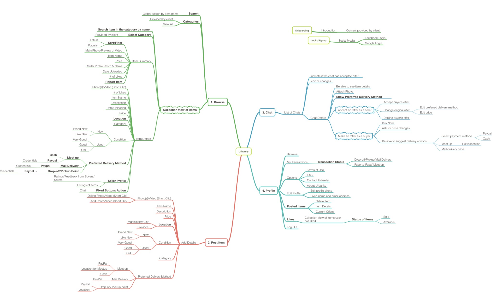

Urbanity
TWO TALL TOTEMS
UX/UI Design
What is Two Tall Totems?
Two Tall Totems is a Vancouver-based company that designs and develops interactive and engaging software, websites, and mobile applications. The company is comprised of about 35 designers, developers, and business people who are highly knowledgeable in current technologies, such as AR and VR, and are expertise in client-facing scenarios that help them create and develop beautiful and effective softwares for enterprise customers and entrepreneurs.
What is Urbanity?
Urbanity is a mobile marketplace incorporated with latest technologies, improving user experience from every angle; faster uploading, intuitive browsing, safer trade options and many more!
Urbanity's goal is to transform the online marketplace (which has been stagnant for decades!) to a safer, bigger, and a better place for its users (Urbanites). By being the mediator between buyers and sellers, Urbanity eliminates the high chance of being scammed in the marketplace. Urbanity makes use of its Secure Pay system through PayPal, by holding the funds before releasing it to the respective seller. It also relies on its users to acknowledge every step of the transaction before proceeding through the transaction process.
Overview

PROCESS
FIRST STEPS
At Two Tall Totems, the very first steps in starting a new project is called the "Discover Phase" at which a meeting with some shareholders is called upon to gather as much information we need to successfully create an app. This involves determining the goal of the product and what kind of users it achieves to have and which problem it aims to solve.
MINDMAPPING
Using the software MINDNODE, we create mindmaps based on the information we have gathered with the client during the discovery meetings. These mindmaps help us determine what kind of functionalities and features the product would have. This will also speed up the process when creating the user experience design of the product by guiding the designer through the core functionalities and determine which features to keep or eliminate if needed.
UX STAGE
WIREFRAMING
Using the industry-standard software, SKETCH, we proceed in creating low fidelity wireframes with every aspect and screens of the app. This includes empty states or idle states for each core features to ensure that the client and developers, in addition to the designers, understand the flow and customer journey while using the application. This also ensures that all features complement each other and that every interaction makes sense for every users no matter what kind of device (iOS or Android) they are using.
MY ROLE
As a UX/UI Designer at Two Tall Totems, I was proud to takeover as the main designer for this project. I was given the very early wireframes and prototypes from the very first discovery session a few months prior before the start of my workterm. From these resources, I was able to refine the UX design of the app by eliminating conflicting interactions such as combining the preferred delivery method and choice of payment method.
UI STAGE
ONBOARDING USERS
MY ROLE
For the onboarding part of Urbanity, I created the icons that complements the onboarding statements. These icons are created using the app's branding while keeping in mind that the user's attention will be focusing on these graphics mostly rather than the text. For this case, the icons have to simple enough yet they have to convey the most information that basically summarizes the content of the particular onboarding screen. This flow also demonstrates the implementation of social media login buttons that comply with Google and Facebook's standards.
IMAGINING DIFFERENT SCENARIOS (Buyer vs Seller Screens)
Since the application will be aimed towards two major types of users, a buyer and a seller, I had to think about the two scenarios while designing the user interface. One example is the Chat function, which answers the question: What will User A see when User B does this action?
Since this is a buy & sell app, designing the user interface had to consider both types of users. This will eliminate future problems such as conflicting features and interactions. This will also make it easier to present the design to the client as it will allow for more understanding of the user flow in the app. Ultimately, imagining all the different scenarios allowed the developers to create the application with ease without having to ask the designer for additional questions during the development phase.
Main Take Aways

During the four months I worked as a UX/UI Designer at Two Tall Totems, I have gained a lot of skills that I would be able to utilize moving forward my career path while improving on some of the skills I already have.
I was able to learn the different tips and tricks SKETCH has to offer which ultimately improved my design process and workflow. Using this software has made me realize that there are far more superior, if not the same, softwares than Adobe Creative Suite in creating engaging, interactive, and useful designs.
I was able to experience real-world, client-facing scenarios in creating a product from scratch. This allowed to have an experience in presenting my designs to prospective clients, and at the same time, improved my communication skills because I had to present in a way that is concise and simple while making sure the client and developers understand every aspect of my designs.
Finally, Two Tall Totems has made me realize that being a UX/UI Designer is the right path for me. With an increadible, helpful, and knowledgeable team, I was able to mature as student designer and has cemented the right path for me moving forward. It has been an incredible four-month ride and I couldn't ask for a better way to spend my FALL 2017.